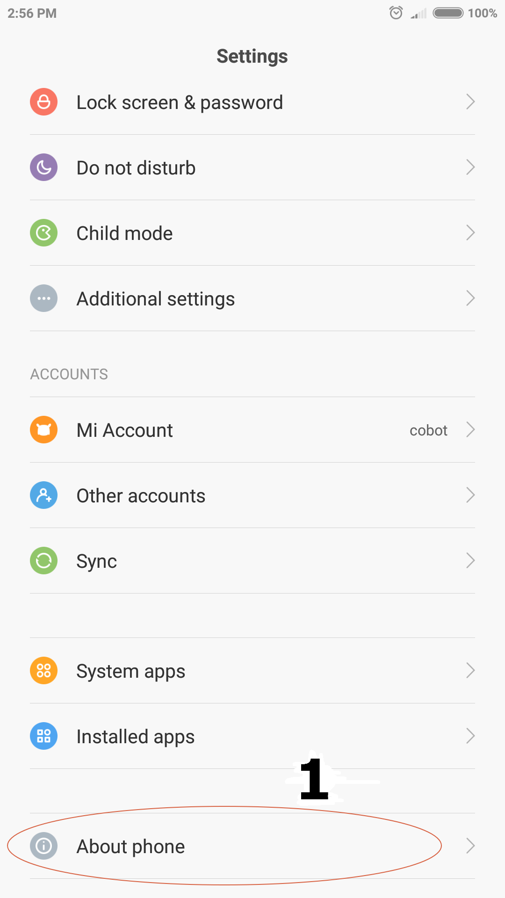
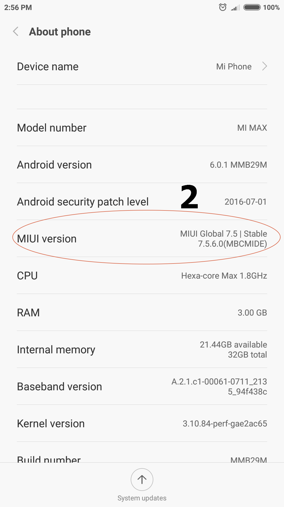
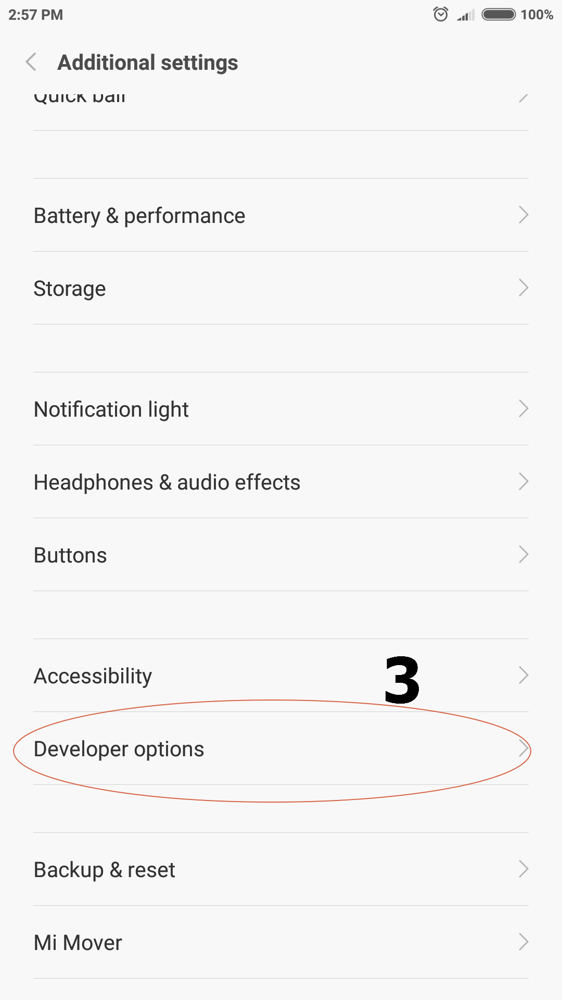
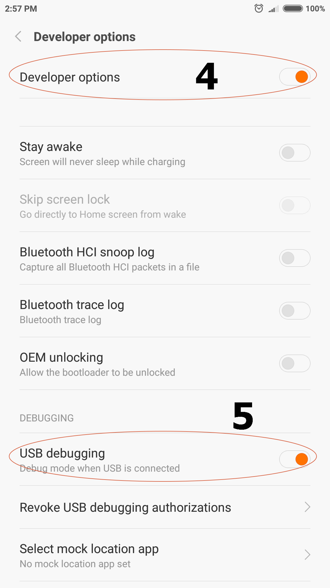
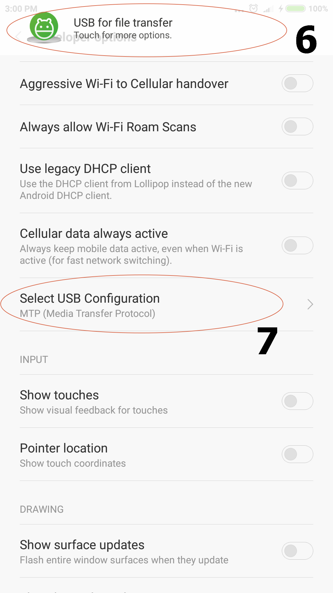
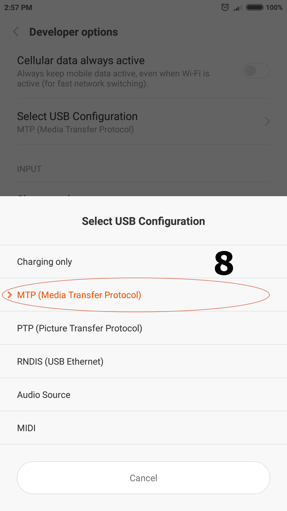

小米手机连接电脑
我们要将手机连接到电脑上，并用电脑访问手机上的文件，如复制、删除歌曲及图片文件等。 但小米助手目前几乎被官方放弃，只支持安卓5.0及以前的系统。
使用手机：小米Max，安卓版本：7.0， 国际版。
下面我们用安卓的USB调试模式连接。
步骤
-
若尚未开启USB调试功能，需要解锁开发者选项
-
Settings > About phone (图中1)

-
多次点击 MIUI version 一项 (图中2)

-
Settings > Additional settings > Developer options (图中3)

-
分别开启 Developer options 与 USB debugging 选项 (图中4与5)

-
-
Developer options > Select USB Configuration > MTP (Media Transfer Protocol) (图中7) 这时插上电脑一般就可以当作U盘使用了。但有时还是发现在电脑上查看时，手机盘里什么内容都看不到的情况。 这时只要重新在 Select USB Configuration 中先切换到别的模式，如充电模式，再切回MTP模式就可以了。有时插上USB或切换模式后会在顶栏出现 提示 (图中6) 只要再确认一下MTP模式即可 (图中8)。这时就可以在电脑上看到文件了。

Comments
Comments powered by Disqus